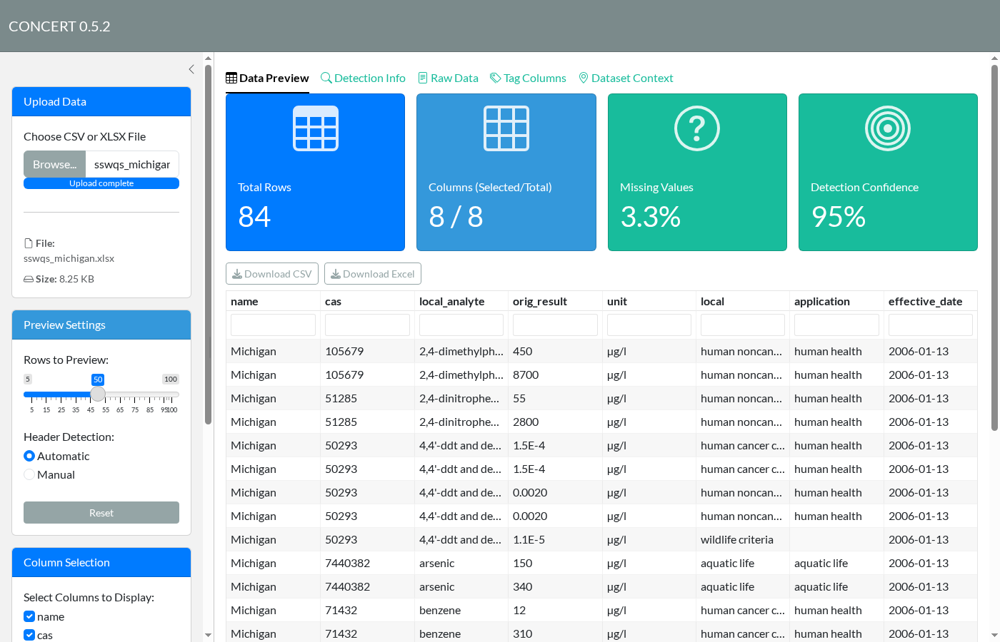
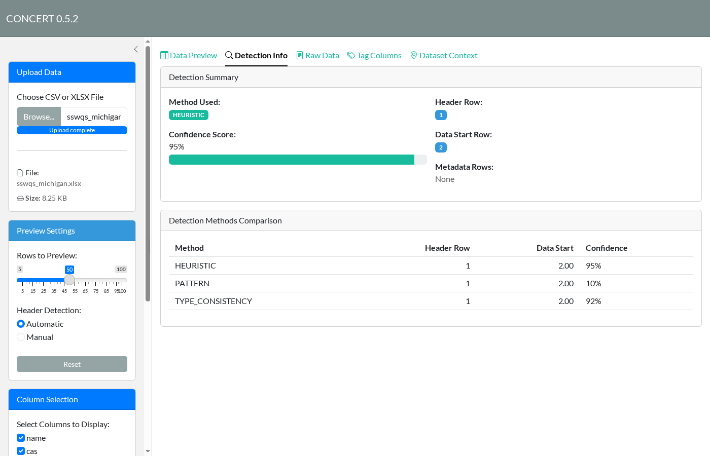
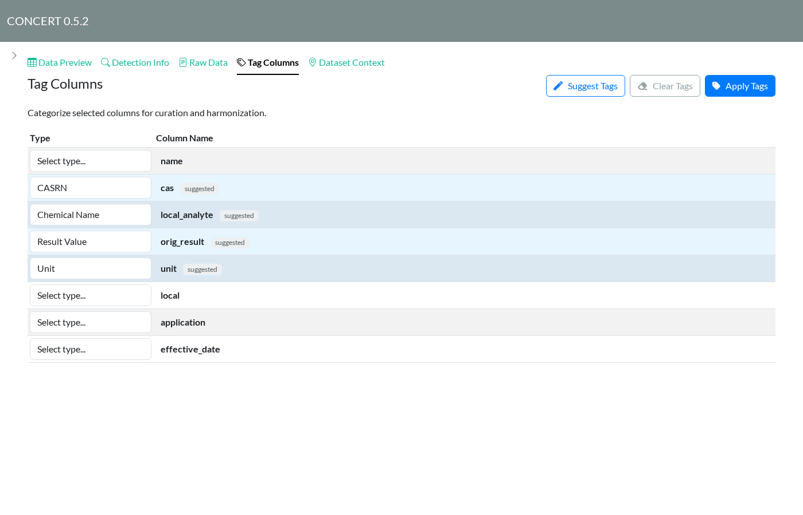
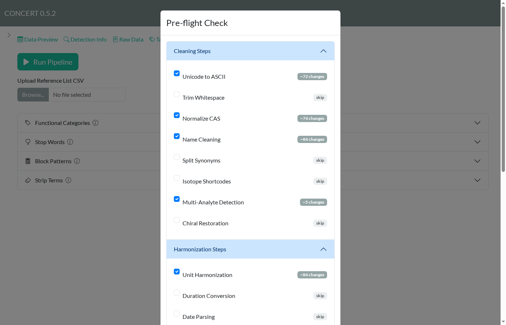
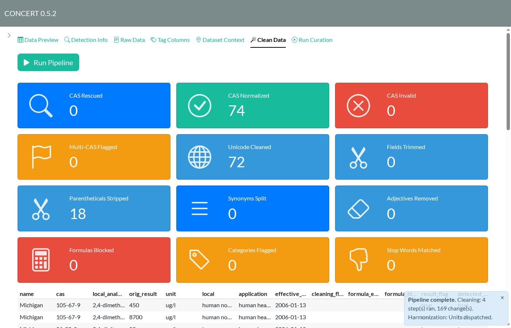
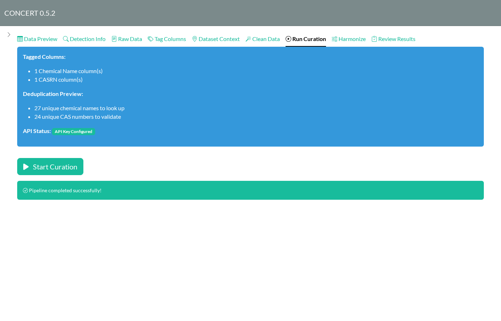
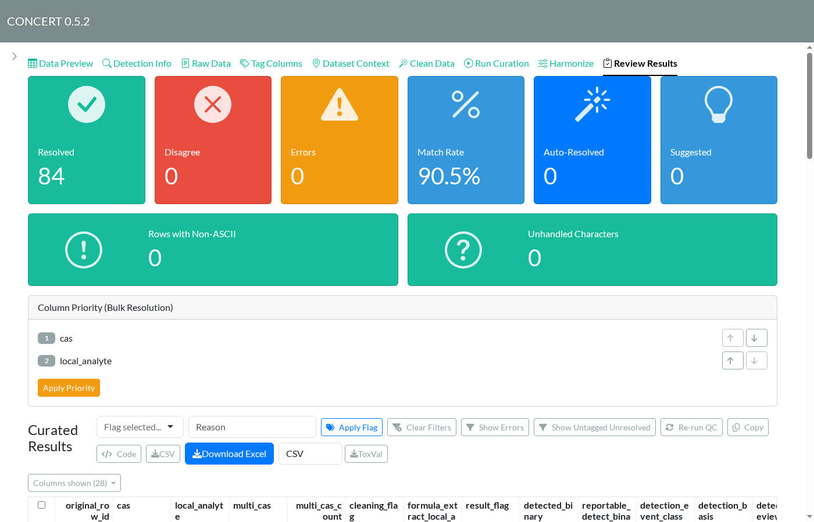
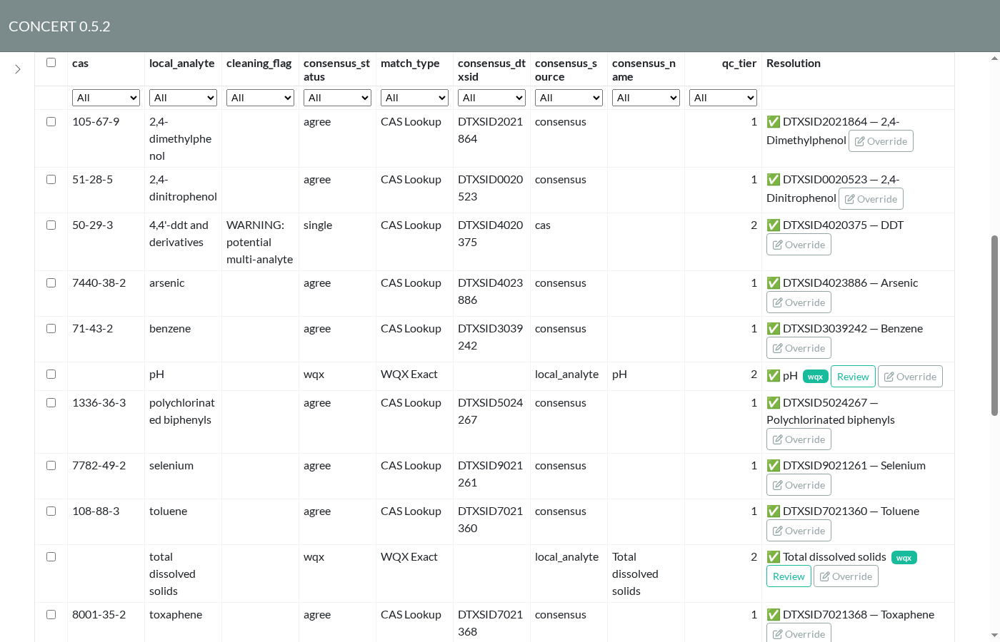
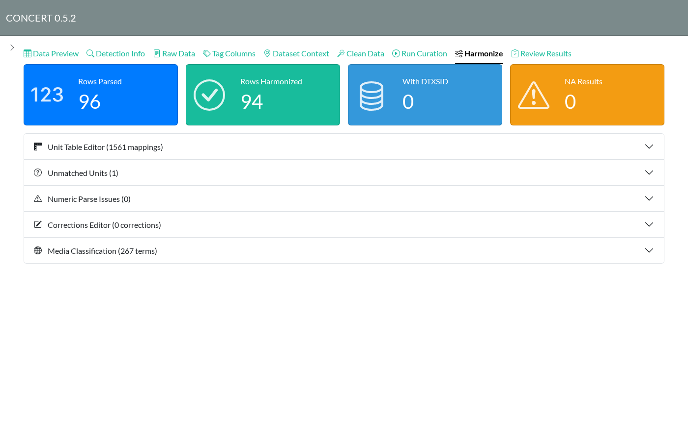

This walkthrough curates the Michigan slice of the state surface water quality standards (SSWQS) dataset: 84 criteria rows covering 27 chemicals, with CAS numbers stored without hyphens, results in scientific notation, and a mix of units. Each step below is one tab in the app. Tabs appear as earlier steps finish.
Start the app:
concert::run_app()Curation needs network access and a CompTox API key in the
ctx_api_key environment variable.
1. Upload
Choose a CSV or XLSX file in the sidebar. Data Preview shows the first rows along with row and column counts, the share of missing values, and how confident CONCERT is about where the data starts. Use Column Selection in the sidebar to drop columns you don’t need.

2. Check header detection
Detection Info explains which row was taken as the header and where the data starts. Three methods vote. If they picked the wrong row, for example in a report with a title block above the table, switch Header Detection in the sidebar to Manual and set the rows yourself.

3. Tag columns
Tag Columns tells CONCERT what each column holds.
Click Suggest Tags to fill in tags guessed from column
names and contents; suggestions are marked suggested. Here it
picks local_analyte as the chemical name, cas
as CASRN, orig_result as the result, and unit
as its unit. Leave columns you don’t need untagged; they still go
through to the export. Every Result column needs a Unit column. Click
Apply Tags when you’re done.

4. Clean
On Clean Data, click Run Pipeline.
The pre-flight check estimates how many rows each step would change and
pre-selects the steps that would do something. Here that means Unicode
clean-up (µg/l becomes ug/l), CAS
normalization, name cleaning, and multi-analyte detection. Click
Run Checked Steps.

The summary cards count what changed: 74 CAS numbers normalized
(105679 became 105-67-9) and 18 parentheticals
stripped from names. The cleaned table below them flags anything that
needs a second look.

5. Run curation
Run Curation shows what will be looked up. Duplicates are collapsed first, so 84 rows become 27 names and 24 CAS numbers. Click Start Curation. CONCERT queries CompTox for names and CAS numbers, matches water-quality parameters against WQX, and scores the candidates. This dataset takes about 20 seconds.

6. Review results
Review Results is where you check and fix the identities. The cards at the top count rows that resolved, rows where the name and CAS lookups disagree, errors, and rows that were resolved automatically or only suggested.

Each row in the table has a Resolution with a DTXSID
and preferred name. Use Override to replace it.
consensus_status shows how the resolution was reached:
-
agree: the name and CAS lookups found the same substance. -
single: only one lookup returned a hit. Here,4,4'-ddt and derivativesonly resolved by CAS and was also flagged as a possible multi-analyte entry. Check rows like this by hand. -
wqx: matched a water-quality parameter such as pH or total dissolved solids, which has no DTXSID. Review shows the WQX match.
Choose which columns to display with Columns shown. To filter to problem rows, use Show Errors and Show Untagged Unresolved. To flag rows, select them, choose a flag and reason, then click Apply Flag.

7. Harmonize
Harmonize reports how numeric results were parsed and how units were converted. Open Unmatched Units and Numeric Parse Issues to fix anything the converter didn’t recognize. Fixes go in Unit Table Editor and Corrections Editor. Media Classification maps media terms to the ontology.

8. Export
Back on Review Results, Download Excel writes the curated workbook with audit sheets. ToxVal writes ToxVal-format rows as CSV or Parquet. Code shows an R script that replays the session headlessly.
The workbook includes a Pipeline Config sheet. Load it
with Import Configuration in the sidebar to restore
your tags and reference-list edits in a later session.
Updating these screenshots
The screenshots come from
scripts/capture_app_screenshots.R, which drives the
installed app through the steps above. After UI changes, reinstall the
package and run:
source("scripts/capture_app_screenshots.R")
capture_app_screenshots()